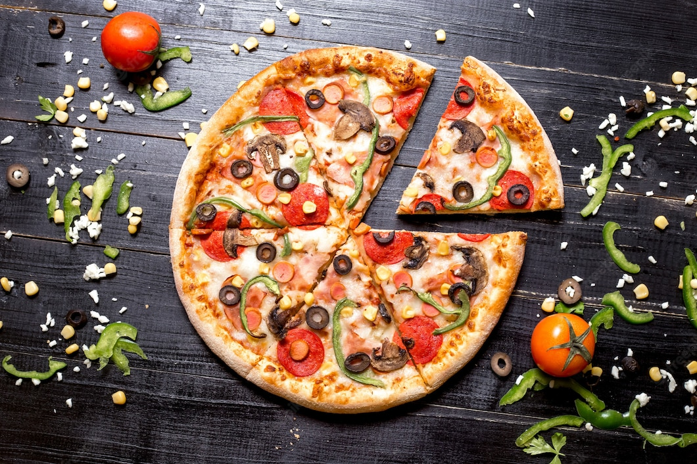

Pizza Recipe

Description:
Pizza can be made almost anywhere as long as you have the right tools and a fireplace. Add any toppings you desire onto it and have a debate about pineapple on pizza with your family and friends.
Ingredients:
- 2 cups all purpose flour
- 100ml tomato ketchup
- 2 onion
- 1 tomato
- 1 teaspoon sugar
- 1 teaspoon baking power
- Cheese
- Mushrooms
- Green Peppers
- 1 tablespoon dry yeast
- Water
Steps:
- Take a dough kneading plate and add all-purpose flour to it. Next, add salt and baking powder in it Then, make a well in the centre and add 1 teaspoon of oil. Add a little warm water and mix the yeast in it along with 1 teaspoon of sugar. Mix well and set aside for 10-15 minutes. The yeast will rise during its rest. Once the yeast has risen, add it to the flour and knead the dough nicely using some water to keep it at a consistent texture. Keep the dough aside for 4-6 hours. Then knead the dough once again. Now, the pizza dough is ready.
- Preheat the oven at 180 degree Celsius. Dust the space a little using dry flour and take a large amount of the pizza dough. Using a rolling pin, roll your pizza dough into a decent circular base. (Note: Make sure that the circular base is even at all ends.) Once you've made the base, use a fork and prick the base with it so that the base doesn't rise and will be baked nicely. Put it into the preheated oven and bake it 10 minutes. Now, your pizza base is ready.
- Wash your mushrooms and green peppers and slice them thinly in a bowl. Additionally cut the tomatoes and mushrooms. However, make sure that those tomatoes have less juice in them. Once all the veggies are done,prepare your choice of cheese and additional toppings onto your pizza.
- Then, take the fresh pizza base and apply tomato ketchup all over. Spread half the processed cheese all over the base and evenly put the veggies all across the base. Once you have put all the veggies, add your choice of cheese on top.
- Put your pizza base in a baking tray and place it inside the oven. Let the pizza bake 10 minutes at 250 degree Celsius. Once done, take out the baking tray, slice your pizza, and enjoy!
Return Home